💪🏼 肌肉系統：上肢肌肉
上臂
上臂的前腔室：3條；皆由★★肌皮N支配
| 肌肉名 | 起-止 | 動作 |
|---|---|---|
| 肱二頭肌(biceps brachi ) | ★肩胛骨-橈骨粗隆 長頭起於：盂上結節(Supraglenoid tubercle) 短頭起於：★喙狀突 | 屈曲(上臂、前臂) 旋後(旋門把的動作) |
| 肱肌(brachialis) | ★★肱骨-尺骨粗隆 | 屈曲(前臂) |
| 喙肱肌(coracobrachialis) | ★肩胛骨-肱骨 | 屈曲(上臂) |
- 肌皮N：位於肱二頭肌、肱肌之間；穿越喙肱肌進入前臂
- 旋後(Supination)：肱二頭肌、旋後肌
- ★[110-1]肱⼆頭肌長頭：穿過結節間溝(intertubercular groove)到關節盂(glenoid cavity)上⽅，並和關節盂裡⾯的關節盂唇(glenoid labrum)連結，最後附著到肩胛骨的盂上結節(supraglenoid tubercle)
上臂的後腔室：1條；由★橈N支配
| 肌肉名 | 起-止 | 神經支配 | 動作 | 備註 |
|---|---|---|---|---|
| 肱三頭肌 (triceps brachii) | 長頭起自：肩胛骨 內側頭、外側頭起自：肱骨 均止於：尺骨鷹嘴突 | ★[106-1]橈N | 伸展(上臂、 前臂) | [重點] 橈N通過肱三頭肌之內側頭、外側頭之間(橈神經溝之內) |
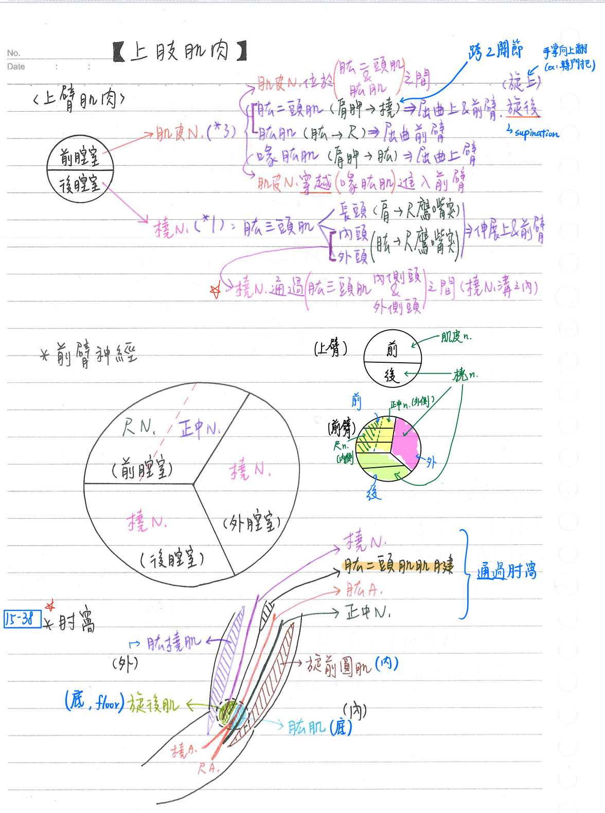
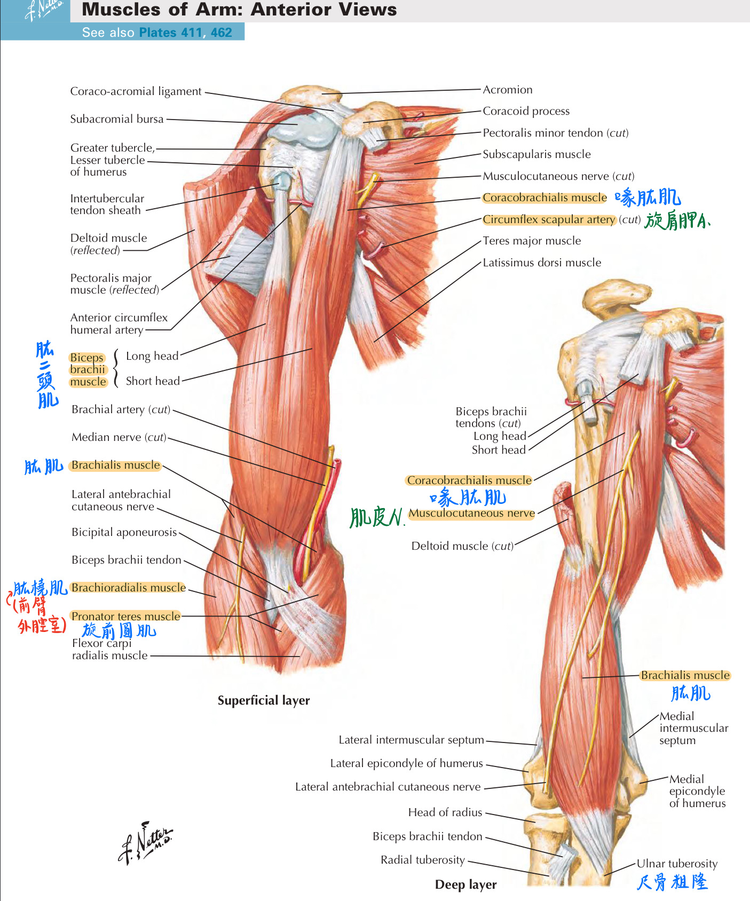
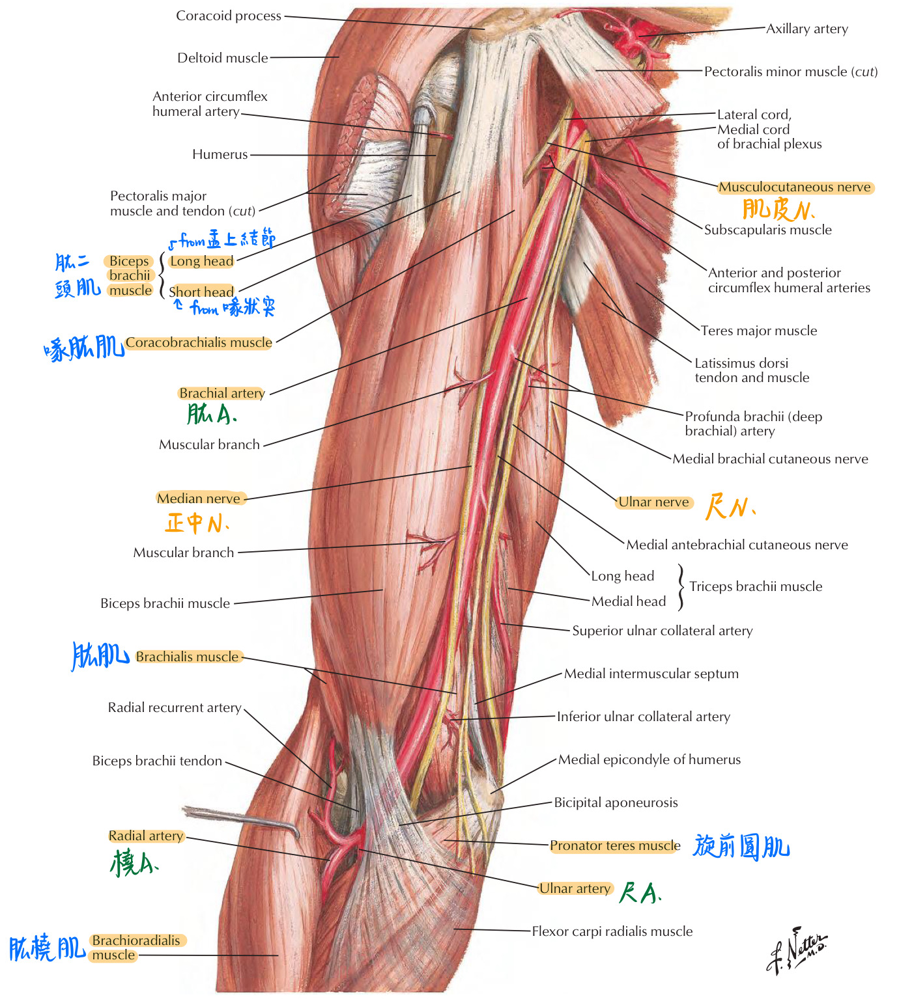
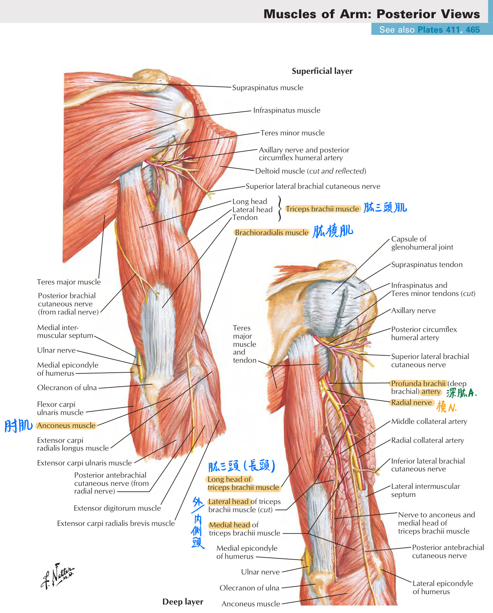
前臂(forearm)
前臂的前腔室：4+1+3條 (淺層依由外而內的順序)；正中N為主；尺N僅支配部分內側
| 層 | 肌肉名 | 起-止 | 神經支配 | 動作 | 備註 |
|---|---|---|---|---|---|
| 淺層 | 旋前圓肌(pronator teres) | 肱骨頭：起自★肱骨內上髁 尺骨頭：起自尺骨冠狀突 均止於橈骨 | ★正中N | 旋前(手掌向下) 屈曲(前臂) | 正中N：通過旋前圓肌之肱骨頭、 尺骨頭之間 |
| ↑ | 橈側屈腕肌(flexor carpi radialis) | 肱骨內上髁-第二、三掌骨 | ★正中N | 屈曲及★外展(腕) | |
| ↑ | 掌長肌(palmaris longus) | 肱骨內上髁-掌腱膜 | 正中N | 屈曲(腕) | |
| ↑ | 尺側屈腕肌(flexor carpi ulnaris) | 肱骨頭：起自肱骨內上髁 尺骨頭：起自尺骨鷹嘴突 ★止於豆狀骨&鉤狀骨 | ★[例外]尺N | 屈曲及內收(腕) | 尺N：通過尺側屈腕肌之肱骨頭、尺骨頭之間 |
| 中層 | ★屈指淺肌 (flexor digitorum superficialis) | ★★正中N | ★屈曲中節指骨 x 4條 | 屈指淺、深肌之腱鞘(tendon sheath)：外為纖維層、內層為滑膜層 | |
| 深層 | 屈姆長肌(flexor pollic longus) | 起：★橈骨前側、中段骨間膜 | ★正中N | 屈曲 姆指遠端指骨 | |
| ↑ | 屈指深肌 (flexor digitorum profundus) | 尺骨-2~5指遠側指骨底 | ★正中N(外2) [例外]★★尺N(內2) | ★屈曲遠端指骨 x4條 | |
| ↑ | 旋前方肌(pronator quadratus) | 尺骨-橈骨 | 正中N | 旋前(手掌向下) | 位於前臂腹側之最深層(前腔室最深層) |
- [重點]淺層的四條肌肉&中層的一條肌肉(屈指淺肌)：皆固定於肱骨內上髁
- 旋前(pronation)：旋前圓肌、旋前方肌
前臂的外腔室：2條；皆為★★橈N支配
| 肌肉名 | 起-止 | 動作 |
|---|---|---|
| 肱橈肌 (brachioradialis) | ★肱骨-橈骨 | 屈曲(前臂) |
| 橈側伸腕長肌 (extensor carpi radialis longus) | ★肱骨-掌骨(II) | 伸展及外展(腕) 屈曲(前臂) |
前臂的後腔室：5+5條；皆為★★★★★★★★橈N(深支)
| 層 | 肌肉名 | 起-止 | 動作 | 備註 |
|---|---|---|---|---|
| 淺層 | 橈側伸腕短肌(extensor carpi radialis brevis) | 肱骨外上髁-掌骨(II、III) | 伸展及外展(腕) | |
| ↑ | 伸指肌 (extensor digitorum) | 肱骨外上髁-指骨(II~V) | 伸展指關節 x4 | |
| ↑ | 伸小指肌(extensor digiti minimi) | 肱骨外上髁-指骨(V) | 伸展小指關節 | |
| ↑ | 尺側伸腕肌(extensor carpi ulnaris) | 肱骨外上髁-掌骨(V) | 伸展及內收(腕) | |
| ↑ | 肘肌(anconeus) | 肱骨外上髁-★尺骨鷹嘴突 | 伸展(前臂) | |
| 深層 | 旋後肌 (supinator) | ★肱骨外上髁&尺骨-橈骨 | 旋後(手掌向上) | 分淺部及深部，★橈N深枝行經其間 |
| ↑ | 外展姆指長肌(abductor pollicis longus) | 起：尺骨幹 | 外展&伸展 姆指 | |
| ↑ | 伸姆指短肌(extensor pollicis brevis) | 起：尺骨幹 | 伸展 掌-姆指關節 | |
| ↑ | 伸姆指長肌(extensor pollicis longus) | 起：尺骨幹 | 伸展 姆指-指間關節 | |
| ↑ | 伸食指肌(extensor indicis) | 起：★尺骨幹 | 伸展 掌-食指關節 |
前臂的淺層肌肉
- 前臂前腔室之淺層&中層肌肉起自於：★肱骨內上髁
[hint：圓形鵝卵石繞(橈)在長方形的池(尺)塘前(淺)]- 淺層肌肉(4條)：旋前圓肌、橈側屈腕肌、掌長肌、尺側屈腕肌
- 中層肌肉：屈指淺肌X4
- 肱骨內上髁炎(medial epicondylitis)：
- 別名：正手拍網球肘=棒球肘=手提箱肘=標槍肘=★高爾夫球肘
- 屈肌受損
- 患者以家庭主婦居多
- 前臂後腔室之淺層肌肉&旋後肌起自於：肱骨外上髁
[hint：橈短指，小尺肘]- ★淺層肌肉(5條)：橈側伸腕短肌、伸指肌、伸小指肌、尺側伸腕肌、肘肌
- 深層肌肉：旋後肌
- 肱骨外上髁炎(lateral epicondylitis)：(反手拍)網球肘=★網球肘
- 伸肌受損
手之功能位置(functional position)
- 功能位置(functional position)：休息時肌肉不特意用力的位置(最放鬆，僅有肌肉基本的張力)
- 肘關節：90度屈曲
- 前臂：中位[介於旋上(supination)與旋下(pronation)之間]
- 腕關節：30度伸展
- 手指：對掌(opposition)
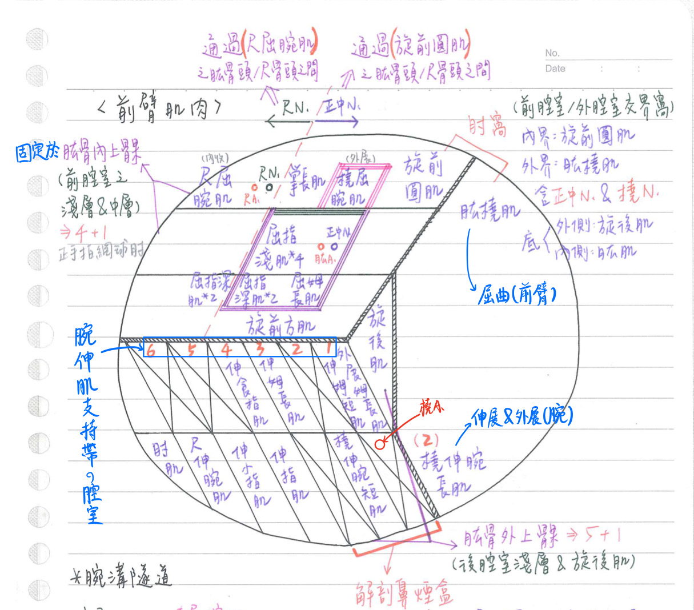
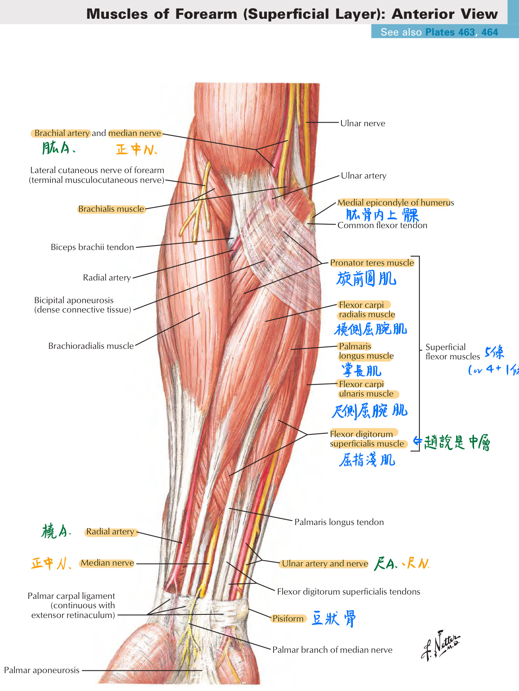
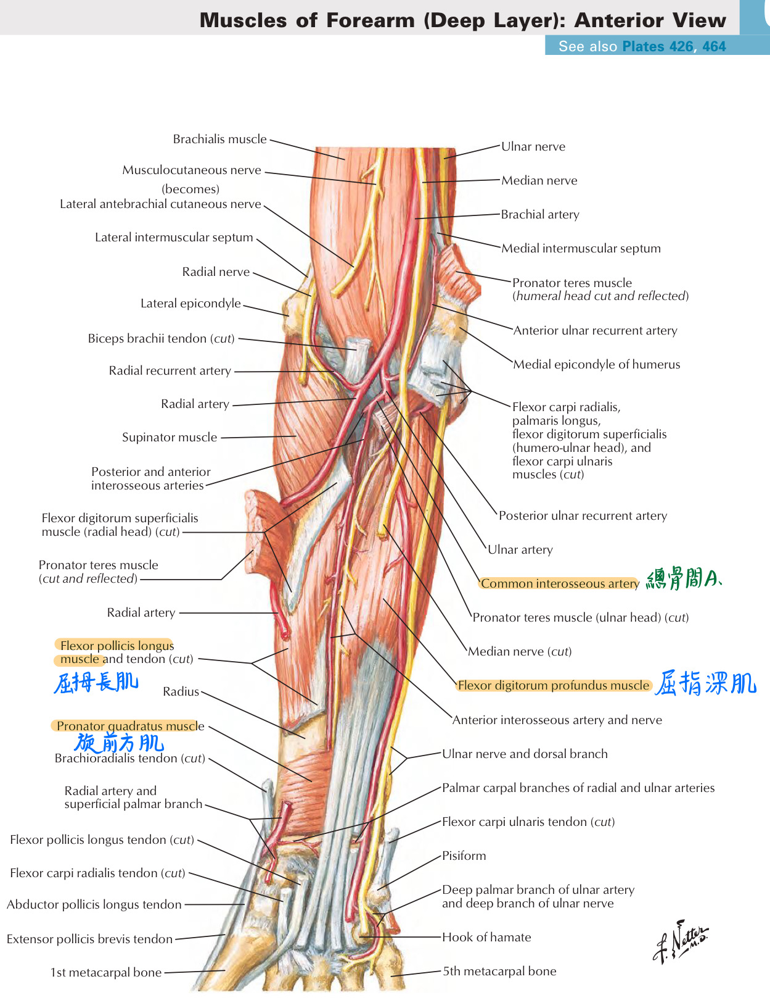
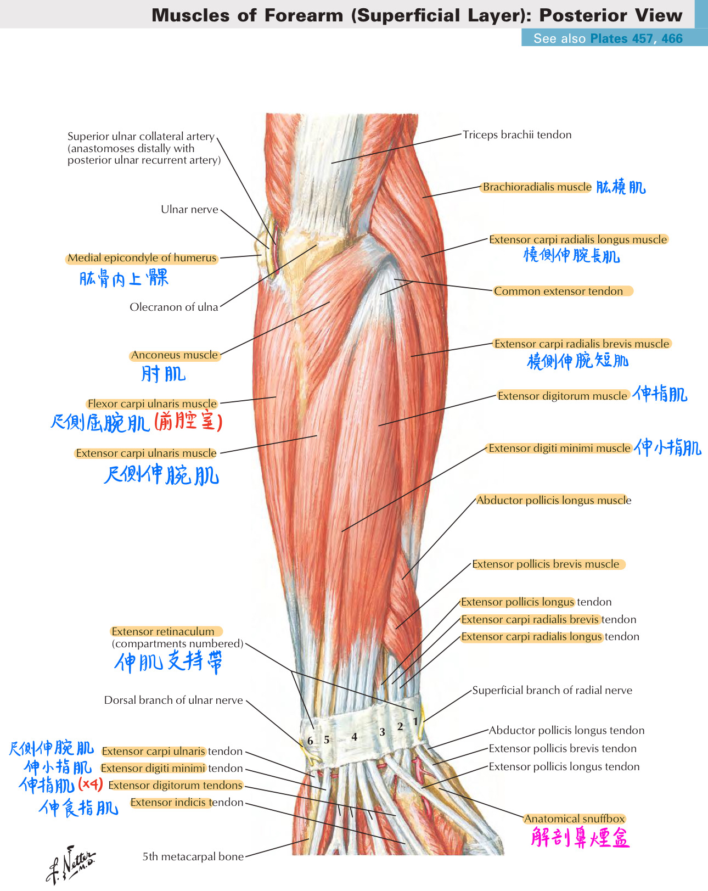
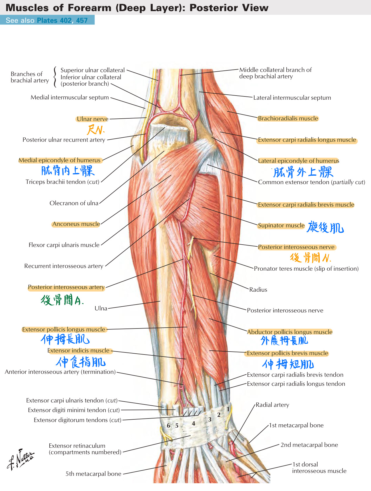
手部肌肉：3+3+4條 (尺N為主、正中N為輔)
| 屬於 | 肌肉名 | 起-止 | 神經支配 | 動作 | 備註 |
|---|---|---|---|---|---|
| 鱼際肌 (thenar m.) [對外屈拇] | 對掌姆指肌(opponens pollicis) | [例外]★★正中N | 内旋 姆指 ★★(對掌) | 魚際隆突(thenar eminence)： 鱼際肌形成的軟组織隆起 猿手(ape hand)：正中N受損 ⇒姆指無法對指(opposition) | |
| ↑ | 外展拇指短肌(abductor pollicis brevis) | [例外]★★正中N | 外展 掌-姆指關節 | ||
| ↑ | 屈姆指短肌(flexor pollicis brevis) | [例外]★★正中N | 屈曲 掌-姆指關節 | ||
| 下魚際肌 (hypothenar m.) [對外屈小] | 對小指肌(opponens digiti minimi) | 尺N(深支) | 外旋第V掌骨 | 魚際隆突(hypothenar eminence)： 下魚際肌形成的隆起 下魚際肌=小魚際肌 | |
| ↑ | 外展小指肌(abductor digiti minimi) | 尺N(深支) | 外展掌-小指關節 | ||
| ↑ | 屈小指短肌(flexordigitiminmibrevis) | 尺N(深支) | 屈曲 掌-小指關節 | ||
| others | 掌短肌 (palmaris brevis) | 掌腱膜&腕屈肌支持帶 -★手之皮膚 | 尺N(淺支) | 使皮膚皺起 強化抓握 | 尺N(淺支)：位於下魚際肌之表淺面 |
| ↑ | 內收姆指肌(adductor pollicis) | ★★★尺N(深支) | 內收姆指 | ||
| ↑ | 蚓狀肌(lumbricalis m.) | 1、2→[例外]正中N 3、4→尺N(深枝) | 屈曲 掌-指關節 伸展 指間關節 x4條 (拇指無) | 爪手(claw hand)：尺N(深枝)受損 [蚓狀肌無力收縮→無名指跟小指無法伸直] | |
| ↑ | 掌側骨間肌(interossei) | ★尺N(深支) | 內收指 x4條 | ||
| ↑ | 背側骨間肌(interossei) | 尺N(深支) | ★★外展指 x4條 |
[重點]肘窩(cutibal fossa)
- 邊界：
- 外界：肱橈肌
- 內界：旋前圆肌
- 底(floor)：旋後肌(外側)&肱肌(內側)
- ★★內容物(由內到外)：正中N、橈N、肱A(再分出尺A&橈A)、肱二頭肌肌腱
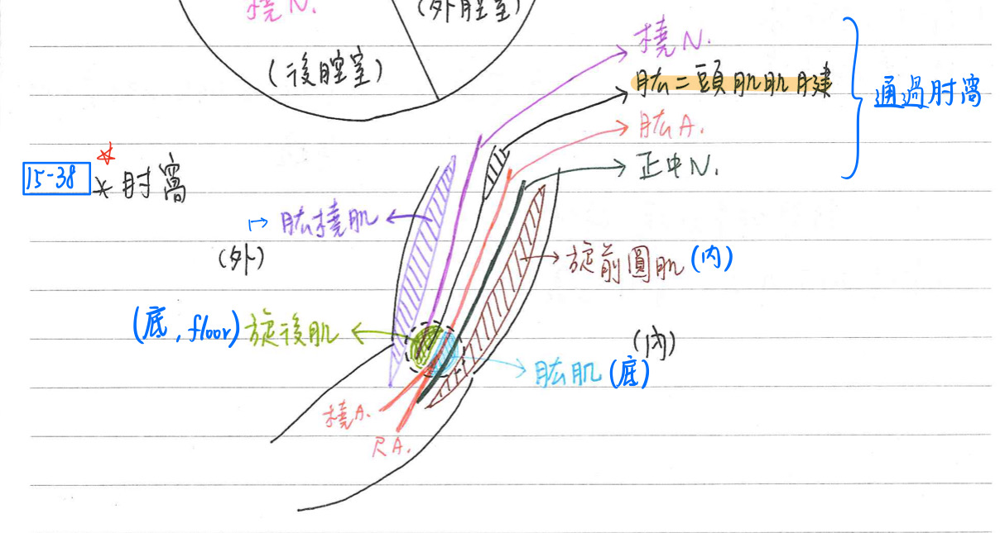
手腕
[重點]腕屈肌支持帶(flexorretinaculum)
- ★內側：附著於豆狀骨(pisiform)&鉤狀骨(hamate)
- ★外側：附著於舟狀骨(scaphoid)&大菱形骨(trapezium)
- 內容物：
- 掌腱膜(palmar aponeurosis)：自掌長肌之肌腱or腕屈肌支持带至指骨的三角形腱膜
- Dupuytren contracure：掌腱膜攣縮
★腕溝隧道(carpal tunnel)：腕屈肌支持带與腕骨間形成之通道
- 外表面：★掌長肌、尺A、尺N
- ★隧道内容物：
- (橈側屈腕肌)
- 淺層：正中N、屈指淺肌x4(FDS)
- 深層：屈指深肌x4(FDD)、★屈拇指長肌(FPL)
備註
有些textbook有包含橈側屈腕肌
- 腕溝隧道症候群(carpal tunel syndrome)：
- 正中N受壓迫：Tinel sign(+)、猿手(ape hand；無法做對掌動作)
解剖鼻煙盒(anatomic snuffbox)
- 位置：手腕外背側三角形凹陷
- 邊界：
- 外界(橈側)：外展拇指長肌、伸拇指短肌(1st腔室)
- 底(floor)：舟狀骨、大菱形骨、橈側伸腕長肌、橈側伸腕短肌(2nd腔室)
- 內界(尺側)：伸拇指長肌(3rd腔室)
- 內容物：橈A、頭V、橈N(Cephalic vein)
- 特點：舟狀骨(scaphoid) & 橈A(radial pulse)觸診點
- ★★橈A之觸診點：橈側屈腕肌腱之外側(把脈的位置)or解剖鼻煙盒之中
- 橈A經外背側之解剖鼻煙盒後，穿越★第1背側骨間肌進入手掌腹面，再穿過內收拇指肌注入深掌動脈弓(deep plmar arch)
腕伸肌支持帶(extensor retinaculm)：其下具6個腔室(compartment)
- 1st腔室：外展姆指長肌(APL)、伸姆短肌(EPB)、橈A
- 2nd腔室：橈側伸腕長肌(ECRL)、橈側伸腕短肌(ECRB)
- 3rd腔室：伸姆指長肌(EPL)
- 4th腔室：伸指肌(ED)、伸食指肌(EI)
- 5th腔室：伸指小肌(EDM)
- 6th腔室：尺側伸腕肌(ECU)(extensor carilars
手部肌腱常見病變
- 鎚狀指(mallet finger)：伸指肌腱斷裂造成遠端指間關節(DIP)過度屈曲(無法伸展)
- 鵝頸指(boutonniere finger)：伸指肌腱脫位，造成遠端指間關節過度伸展、近端指間關節過度彎曲
- 板機指(trigger finger)：屈指肌腱之近端指間纖維骨性隧道(PIP pulley)窄缩，造成伸指時具阻力
- 發生於A1 pulley
手部感覺&運動統整
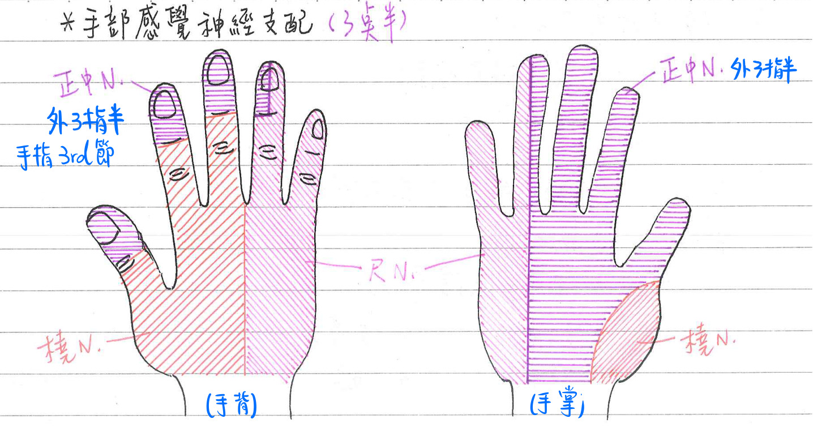
- 運動：
- 姆指：
- 橈N：伸拇長&短肌、外展拇長肌
- 正中N：外展拇短肌、屈拇長&短肌、★對掌拇指肌
- 尺N：內收拇肌
- 手掌：掌長肌(正中N)；掌短肌(尺N)
- 蚓狀肌：1st、2nd(正中N)；3rd、4th(尺N)
- 腹側、背側骨間肌：尺N
- 姆指：
- 感覺：
- 腹面：
- ★★手指：外3指半(正中N)；內1指半(尺N)
- 手掌：★★魚際區(橈N)；外側(正中N)；內側(尺N)
- 背面：
- ★手指第3節：外3指半(正中N)；內1指半(尺N)
- 手指第1、2節：外3指(橈N)；内2指(尺N)
- 手背：★外3指(橈N)；內2指(尺N)
- 腹面：
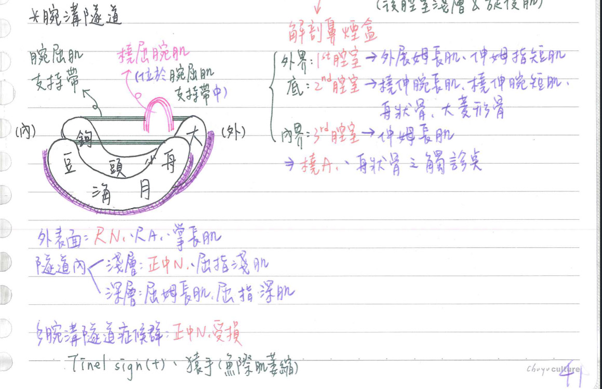
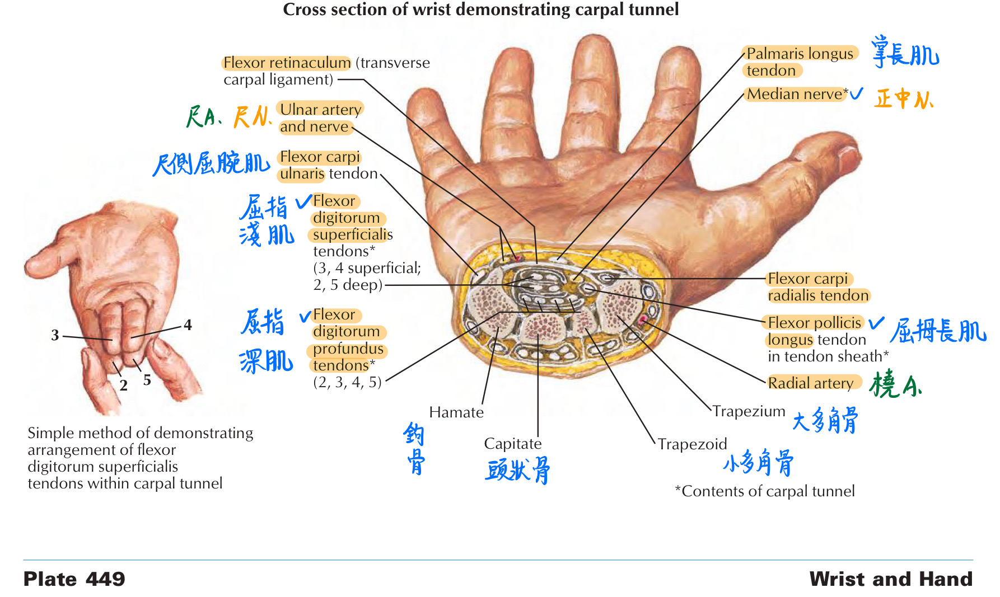
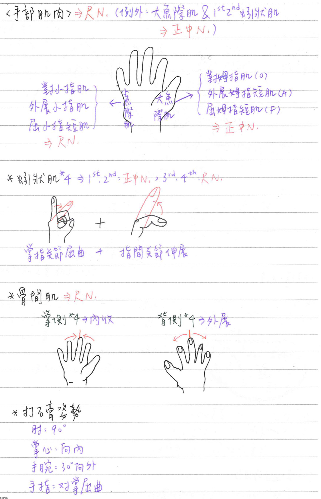